CS184/284A Fall 2026 Homework 3 Write-Up
Link to webpage: https://cal-cs184-student.github.io/hw3-steve-writeup/
Link to write-up GitHub repository: https://github.com/cal-cs184-student/hw3-steve-writeup
Link to code repository: https://github.com/cal-cs184-student/hw3-steve
Overview
At a high level, in this assignment I implemented a path tracer that generates camera rays, finds the surfaces they hit, and estimates how light reaches the camera. I first added triangle and sphere intersections, then used a bounding volume hierarchy to make larger scenes practical to render. From there, I implemented direct lighting, indirect lighting through multiple bounces, and adaptive sampling. One interesting thing I learned is that shadows are not simply areas with no light: the bunny's underside is nearly black with direct lighting, but light reflected from the surrounding surfaces makes its shape visible once indirect bounces are included.
Part 1: Ray Generation and Scene Intersection
Ray generation and intersection pipeline
For each pixel, I first sample random positions inside it and divide their coordinates by the image width and height. This gives normalized image coordinates between 0 and 1. I map each position onto the camera's sensor plane at z = -1, using the horizontal and vertical fields of view to determine the plane's size. Then, I rotate the direction into world space with the camera-to-world matrix and normalize it.
Next, I find the closest primitive intersected by the ray. For spheres, I substitute the ray equation into the sphere equation and solve the resulting quadratic, choosing the closest valid root. For triangles, I use the intersection algorithm described below. Each valid hit updates the ray's maximum distance, so a farther surface cannot replace a closer one. The intersection also stores the surface normal and material. Finally, I estimate the radiance along each camera ray and average the samples to get the pixel's color.
Triangle intersection algorithm
I use the Möller-Trumbore algorithm, which solves for the ray's distance to the triangle and the hit point's barycentric coordinates together. A useful way to think about this is that the same point must be reachable in two ways: by traveling along the ray, or by starting at one triangle vertex and moving along its two edges. I form the edge vectors p2 - p1 and p3 - p1, then use cross products and dot products to solve for the distance t and the weights beta and gamma.
If the determinant is zero, the ray and triangle do not have a unique intersection, so I return false. Otherwise, the point is inside the triangle only when beta and gamma are nonnegative and beta + gamma is at most 1. I also check that t lies within the ray's valid range. For a valid hit, the remaining weight is alpha = 1 - beta - gamma. I use these three weights to interpolate the vertex normals and normalize the result, giving smooth shading across the triangle.
Normal shading results


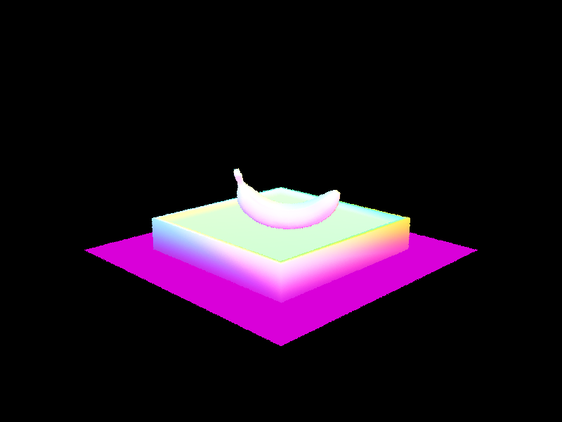
Part 2: Bounding Volume Hierarchy
Construction and split heuristic
A BVH groups nearby primitives inside bounding boxes, so a ray can skip an entire group when it misses that group's box. To construct it, I first expand one bounding box to contain all primitives in the current range. If there are at most four primitives, I make a leaf and store the beginning and end of that range.
For the heuristic, I choose the longest axis of the bounding box and split at its midpoint. I compare each primitive's bounding-box centroid with that split point, placing it in the left or right range. Then, I recursively build a child for each range. Choosing the longest axis gives the split room to separate the geometry. If all primitives fall on the same side, I instead split the range in half. This ensures that both recursive calls receive fewer primitives, even when their centroids overlap.
Large-scene normal shading
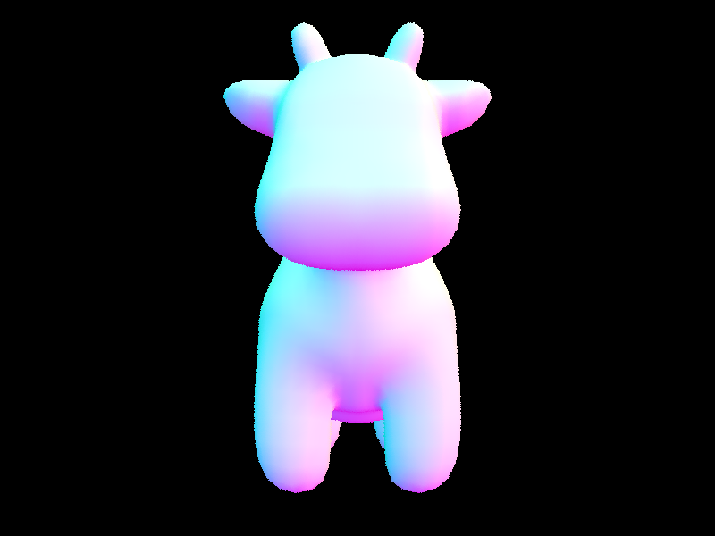
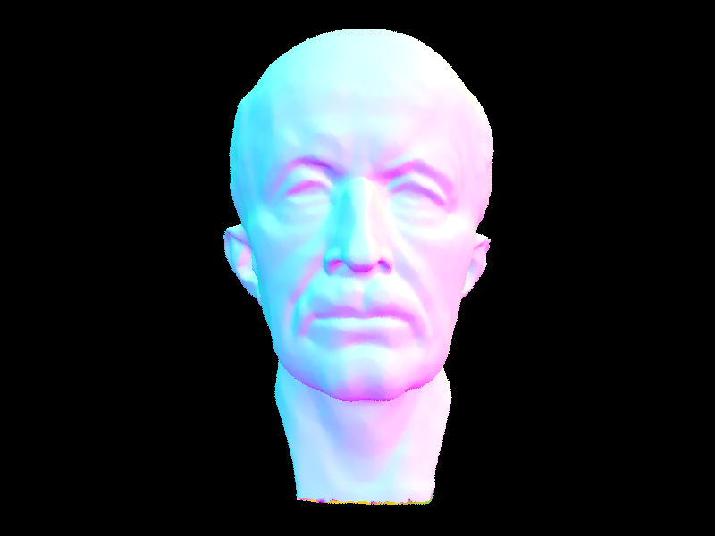
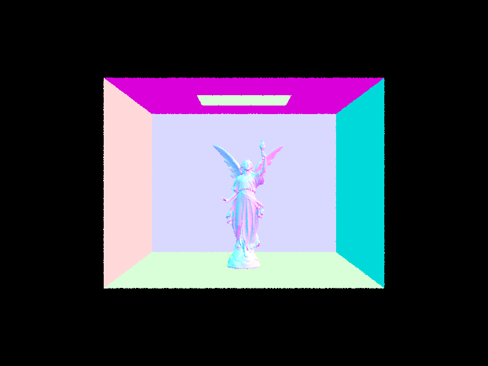
Rendering time comparison
| Scene | Without BVH | With BVH | Speedup |
|---|---|---|---|
| cow.dae | 0.6070 s | 0.0167 s | 36.3× |
| beetle.dae | 1.2705 s | 0.0149 s | 85.3× |
| teapot.dae | 0.4803 s | 0.0188 s | 25.5× |
BVH acceleration reduced the rendering time for all three scenes. The cow went from 0.6070 seconds to 0.0167 seconds, about 36.3 times faster. The beetle went from 1.2705 seconds to 0.0149 seconds, about 85.3 times faster, while the teapot went from 0.4803 seconds to 0.0188 seconds, about 25.5 times faster. This is because without the BVH, each ray tests every primitive. With it, a missed bounding box removes a whole group of primitive tests at once. The speedup varies because each scene has a different arrangement of geometry, so its bounding boxes differ in how much work they let a ray skip.
Part 3: Direct Illumination
Hemisphere sampling and light sampling
Both methods estimate light reflected toward the camera. For diffuse materials, I use reflectance / pi as the BSDF. I multiply each contribution by this value and the cosine of the incoming angle, then divide by the sampling probability density.
First, for uniform hemisphere sampling, I create a local frame with the surface normal along positive z. Next, I sample directions uniformly, transform them into world space, and trace rays from the hit point. A sample contributes the emission of the first surface it hits; non-emitting surfaces and misses contribute zero. Finally, I weight the contributions using the probability density 1 / (2 * pi) and average them.
For the second method, I sample each light directly to obtain its direction, radiance, distance, and probability density. Then, I skip directions behind the surface and cast a shadow ray that ends just before the light. If nothing blocks it, I add the weighted contribution. Finally, I average each light's samples and sum the estimates, using only one sample for point lights. In both methods, a small minimum ray distance prevents immediate intersections with the starting surface.
Direct lighting results
These images compare hemisphere sampling with light sampling for the bunny and spheres, using 64 samples per pixel and 32 samples per light.
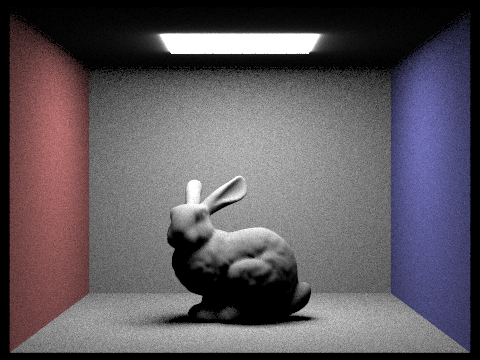
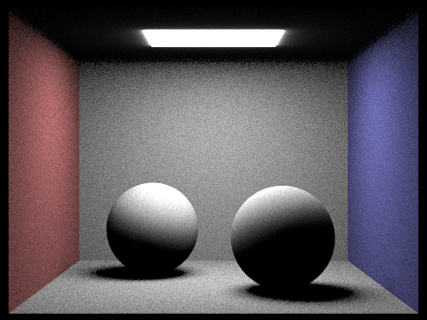
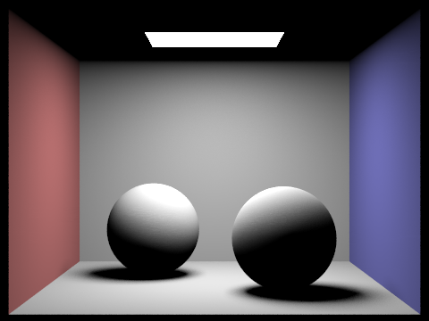
The light-sampling results have smoother walls and shadows at the same sample budget. With hemisphere sampling, most directions miss the light and contribute zero, so the estimate varies more between pixels. In comparison, light sampling directs more work toward useful contributions and also handles point lights. The difference is especially visible in the shadows and grain on the walls.
Soft-shadow noise with different light-sample counts
I rendered CBbunny.dae using light sampling and one sample per pixel. The images show how increasing the number of light samples affects noise in the soft shadows.
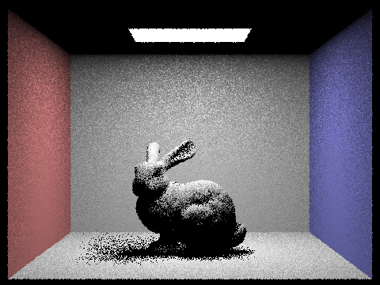
With one light sample, the shadows are speckled because each pixel gets little information about the area light's visibility. As the count increases to 4, 16, and 64, the shadows become smoother. However, the outline still has some jaggedness because there is only one camera sample per pixel.
Part 4: Global Illumination
Indirect lighting implementation
First, I calculate direct lighting when accumulated bounces are enabled. Then, I use sample_f() to choose a cosine-weighted direction for a diffuse material, transform it from the local frame into world space, and trace a new ray. I give this ray a small minimum distance and decrease its remaining depth by one.
Next, if the ray hits another surface, I recursively estimate the reflected light there. I multiply the result by the current surface's BSDF and the sampled direction's cosine, then divide by its probability density. The recursion stops at the depth limit or when the ray leaves the scene. To show only the mth bounce, I keep the direct-light term only at the final level.
Finally, I use Russian roulette to shorten paths. When the maximum depth exceeds one, the first indirect bounce is guaranteed. After that, paths continue with probability 0.65, and I divide their indirect contribution by 0.65 to compensate for terminated paths. This prevents roulette from systematically darkening the result, while the depth limit still provides a cutoff.
Global illumination results
I used a fixed 1024 samples per pixel and four samples per light to render direct and indirect illumination with a maximum of five bounces.
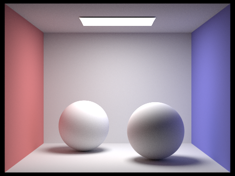
Direct illumination versus indirect illumination
These two views of CBbunny.dae separate direct light from indirect light, using 1024 samples per pixel and four samples per light. The indirect view includes bounces 2 through 5.
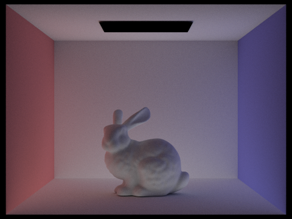
Individual and accumulated bounces
I rendered CBbunny.dae with 1024 samples per pixel and four samples per light. In each pair, the left image shows only bounce m, while the right adds all bounces from 0 through m.
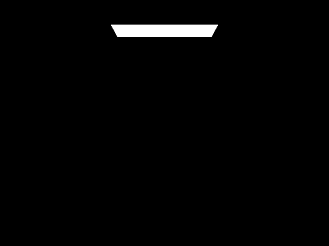
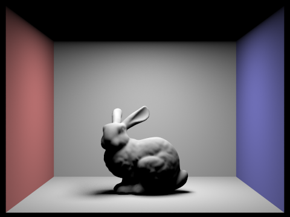
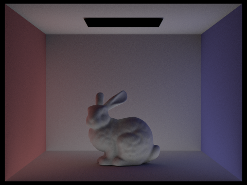
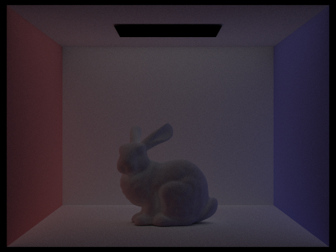
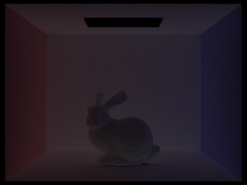
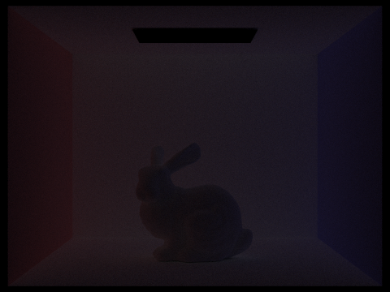
At m = 0, only the light source is visible. At m = 1, the bunny receives direct light but its underside stays dark. The second bounce makes that underside and the ceiling visible through reflected light, while also carrying red and blue color from the walls.
Next, the third bounce spreads light farther but contributes less because each reflection absorbs some energy. Adding it fills the shadows further, while accumulated results change less at higher depths. Compared with rasterization using only direct or local shading, these bounces make shadowed surfaces respond to their surroundings instead of a constant ambient term.
Russian roulette at different maximum depths
These views compare accumulated lighting in CBbunny.dae at different depth limits, using 1024 samples per pixel and four samples per light. When indirect lighting is enabled, the first indirect bounce is guaranteed; afterward, each path has a 35% chance of stopping.
Samples per pixel
I varied the fixed number of samples per pixel in CBbunny.dae to compare image noise. Each render uses four samples per light and includes accumulated lighting up to five bounces.
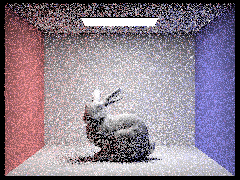
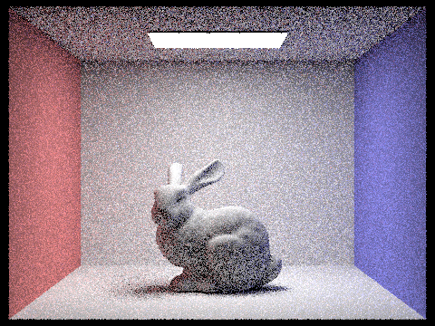
Part 5: Adaptive Sampling
Implementation
First, I track the sum of sample illuminances and their squares to calculate the mean and variance without storing every sample. After each batch, I calculate the 95% confidence-interval half-width: I = 1.96 * sqrt(variance / n), where n is the sample count.
Then, I stop when I is at most maxTolerance times the mean; otherwise, I continue up to the sample limit. This checks whether the estimate is stable relative to its brightness. Finally, I average the RGB radiance using the actual sample count and store that count in sampleCountBuffer for the rate image.
For the results, the sampling-rate images show that the blue back wall converges with fewer samples, while the shadowed sides and contact shadows use more samples. These areas have more variable estimates, and their darker means make the relative stopping condition stricter. As a result, computation is concentrated where the image needs it most.
Adaptive results and sampling rates
I rendered both scenes using one sample per light, up to five bounces, and a maximum of 2048 samples per pixel. Sampling is checked every 64 samples with a tolerance of 0.05, and the rate maps use blue for fewer samples and red for more.
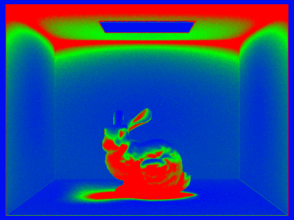
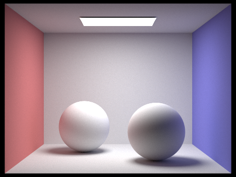
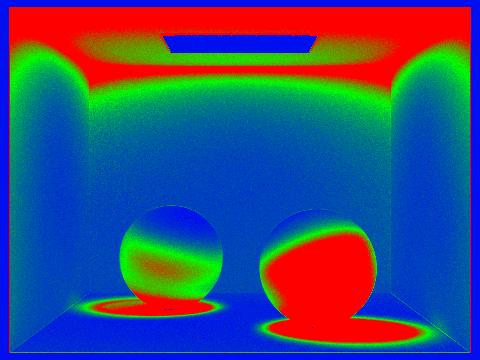
Acknowledgement of AI
I used Codex to review my code, checking the logic of my algorithms and catching various bugs. I also used it to generate and assemble all of the basic HTML and CSS for formatting the write-up.